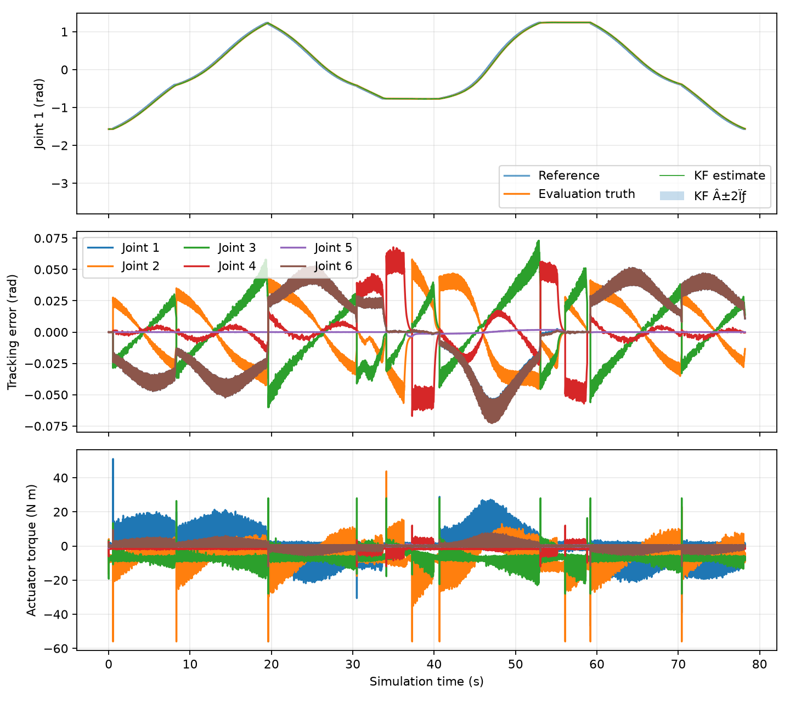
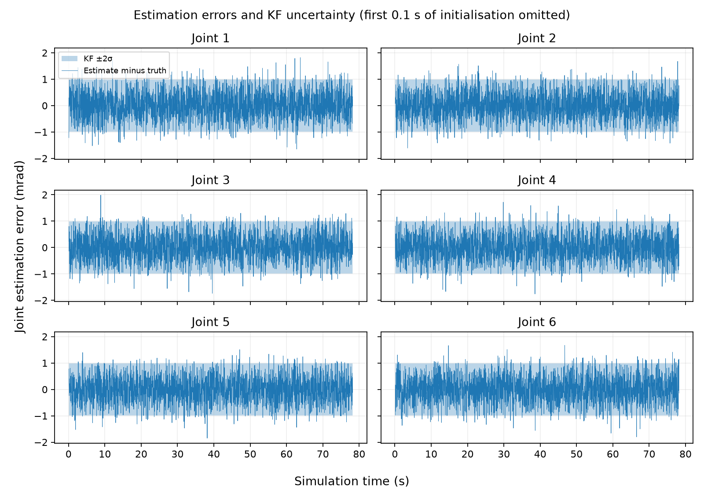
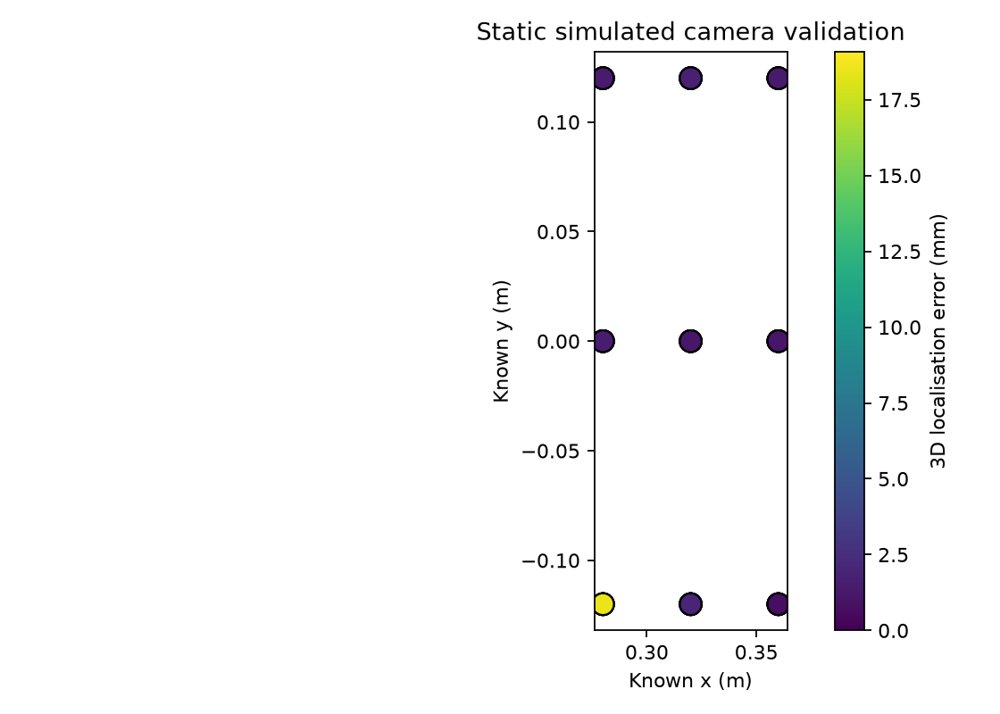
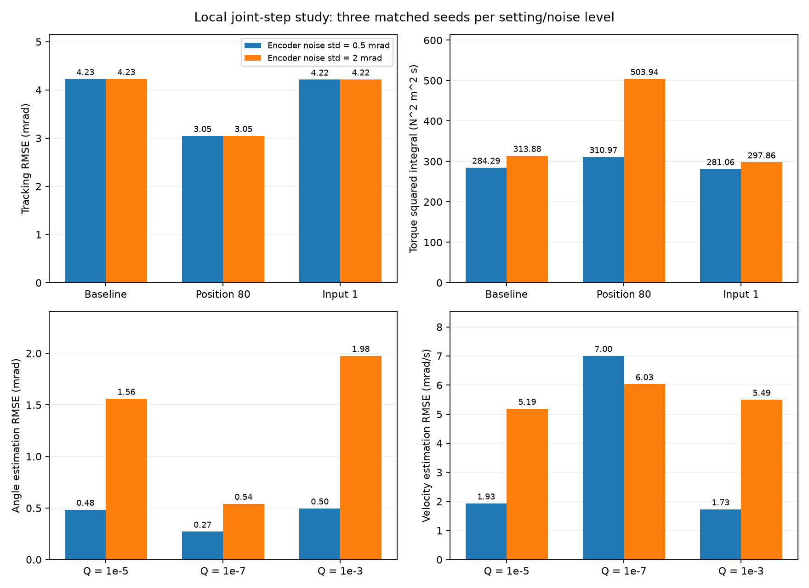
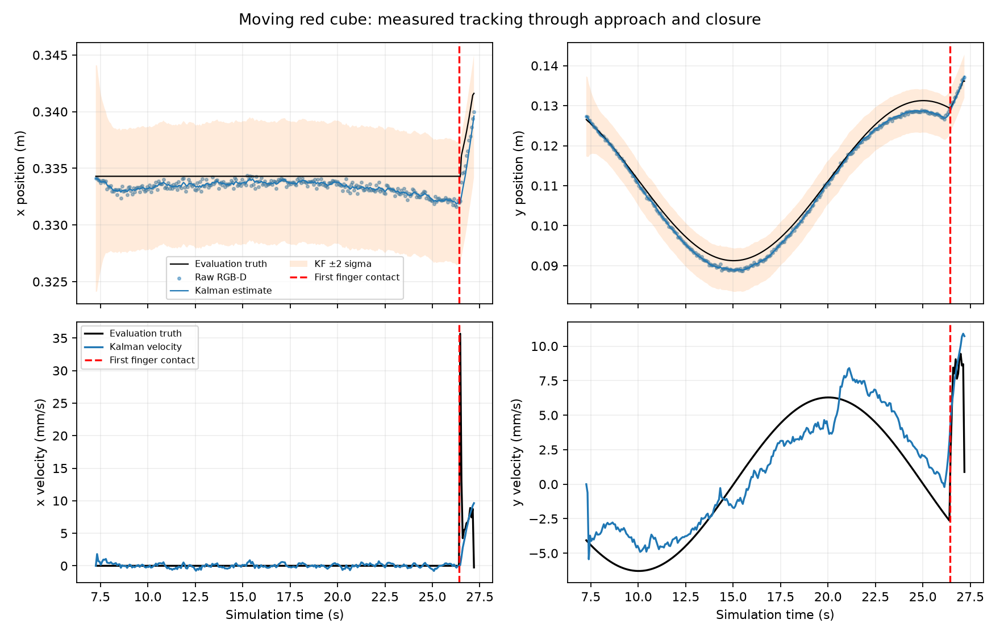

Group 16: measured validation
UR3e vision-guided sorting · Track B · Simulation evidence · 6 November 2026
This is a development evidence report, not a grade claim. The current scene uses matching red/yellow/blue tray walls and neutral floors; older rows retain their original palette and source hashes. Read the stage-by-stage walkthrough and viva guide. Video, accurate individual contributions and the final project-page narrative still require completion. Return to the submission draft.
Implemented pipeline
RGB-D → object Kalman filters → PBVS Cartesian targets → inverse kinematics
→ joint references → LQR → MuJoCo position-servo actuators
Noisy encoders → joint Kalman observer → estimated joints → LQR and FK
Fresh RGB-D + finger sensors → pickup, carry and placement decisions
Simulator truth → evaluation logs only
Forward kinematics supplies world-to-wrist pose from estimated joints. Fixed wrist-to-camera and wrist-to-TCP transforms then define sensor and tool poses. Pixels are back-projected with K and depth, then transformed in the reverse direction into world coordinates. MuJoCo camera axes are +x right, +y up and -z optical forward. Numerical camera mounting and intrinsics.
LQR is the only implemented arm actuator feedback controller. IK generates references and the simulated actuator plant retains its internal position servos. A fixed wrist-camera mounting is used throughout each trial. Known tray locations direct a search; RGB-D measurements supply the drop target.
Recorded task trials
Each row is a complete requested run, including failure. These development seeds are a small, selected sample, so they cannot establish a general reliability rate. Source hashes in each JSON distinguish revisions.
| Condition | Seed | Completed | Sequence | Visual pickup / place | Failure | Evidence |
|---|---|---|---|---|---|---|
| Current grey table, side-to-side motion, red/blue/yellow order | 7 | 3/3 | PASS | 3 / 3 | — | JSON |
| Current grey table, side-to-side motion, blue/yellow/red order | 7 | 3/3 | PASS | 3 / 3 | — | JSON |
| Earlier circular target, red first | 7 | 1/1 | PASS | 1 / 1 | — | JSON |
| Earlier circular target, blue/yellow/red order | 7 | 3/3 | PASS | 3 / 3 | — | JSON |
| Matching-colour trays, earlier static geometry detector | 7 | 3/3 | PASS | 3 / 3 | — | JSON |
| Single yellow, development milestone | 7 | 1/1 | PASS | 1 / 1 | — | JSON |
| Nominal, corrected detection | 7 | 3/3 | PASS | 3 / 3 | — | JSON |
| Nominal, corrected detection | 11 | 3/3 | PASS | 3 / 3 | — | JSON |
| Nominal, fresh installation | 23 | 3/3 | PASS | 3 / 3 | — | JSON |
| Encoder 2 mrad + pixel depth 5 mm | 7 | 3/3 | PASS | 3 / 3 | — | JSON |
Download the corrected seed-7 joint trajectory (CSV gzip, downsampled to 50 Hz). Full 500 Hz logs remain in the local results folder; downsampling is only for distribution.
Earlier failures, retained for diagnosis
| Condition | Seed | Completed | Sequence | Visual pickup / place | Failure | Evidence |
|---|---|---|---|---|---|---|
| Moving-target prototype, stale final camera reference | 7 | 0/1 | FAIL | 0 / 0 | stale_cube_target:Red Cube | JSON |
| Moving target, earlier camera hid retained cube | 7 | 0/1 | FAIL | 0 / 0 | pickup_unconfirmed:Red Cube | JSON |
| Matching-colour prototype, partial face rejected | 7 | 0/3 | FAIL | 0 / 0 | pickup_unconfirmed:Red Cube | JSON |
| Earlier detector | 7 | 1/3 | FAIL | 2 / 1 | placement_unconfirmed:Blue Cube | JSON |
| Earlier detector | 11 | 1/3 | FAIL | 1 / 1 | target_not_visible:Blue Cube | JSON |
| Earlier detector | 23 | 1/3 | FAIL | 2 / 1 | placement_unconfirmed:Blue Cube | JSON |
| Earlier gripper | 7 | 0/1 | FAIL | 1 / 0 | carry_gripper_sensor_lost:Yellow Cube | JSON |
Earlier blue-cube failures came from colour thresholds and background selection. Large blue floor contours could suppress a valid object before workspace rejection. Workspace validation now precedes candidate selection, and a regression test recreates that failure. Earlier grasp slip persisted after increasing finger gain alone; longer pads, stiffer contact and the elliptic friction solver produced a successful transfer. Their individual effects have not yet been isolated.
Observed tracking and uncertainty
The successful yellow-cube development trial records references, evaluation truth, estimates and covariance. The separate error plot makes the small uncertainty band visible. These are measurements from the recorded run, not illustrative curves.


Model and feedback
x = [q₁ … q₆, q̇₁ … q̇₆]ᵀ y = [I₆ 0] x + v x[k+1] = A x[k] + B u[k] + c A: 12×12 B: 12×6 C: 6×12 D: 6×6 u = actuator joint-position targets (rad) u = u_equilibrium(q_ref) − K [q̂−q_ref, q̇̂]ᵀ Qc = diag(20 I₆, I₆), Rc = 0.1 I₆
The MuJoCo transition is linearised locally using finite differences, including actual position-actuator dynamics. The model is refreshed every 0.5 simulated seconds around estimated joints. Initial controllability and observability ranks are both 12/12. The initial closed-loop spectral radius is about 0.9911; a small-perturbation one-step residual is about 10⁻⁶ in the mixed state coordinates.
These are local properties. Contact, torque saturation and large posture changes invalidate a global linear-model interpretation. Actuator target clipping is logged separately. In the corrected seed-7 sequence there was no target clipping, but at least one arm actuator reached its force limit in about 0.037% of samples. These are different saturation measures; see the force-limit analysis. A tiny one-step residual does not establish full-trajectory model accuracy.
Joint KF defaults: R = (0.0005 rad)² I₆ and Q = 10⁻⁵ I₁₂. Joseph covariance updates are used. Equal numerical process variances across position and velocity have different units and are a provisional modelling choice.
Camera validation
A static bench places one cube at nine known table locations (x = 0.28, 0.32, 0.36 m; y = −0.12, 0, 0.12 m), with five observations each. Robot pose is set explicitly for this sensor bench; it is not a pick-and-place experiment. Localisation uses noisy encoder-derived FK, colour/depth measurements and the known 40 mm cube geometry.
| Revision / experiment | Added pixel depth noise | Detected / attempted | 3D RMSE | Maximum error | Raw data |
|---|---|---|---|---|---|
| final_calibration_clean | 0 mm | 45/45 | 6.39 mm | 19.08 mm | Measurements |
| final_calibration_5mm | 5 mm | 45/45 | 6.55 mm | 19.35 mm | Measurements |
| matching_camera_partial_fix | 0 mm | 40/45 | 1.49 mm | 2.76 mm | Measurements |
| live_side_view_camera_validation | 0 mm | 45/45 | 2.48 mm | 3.49 mm | Measurements |
| clear_sweep_camera_validation | 0 mm | 45/45 | 2.42 mm | 3.58 mm | Measurements |
The earlier matching-colour geometry detector accepted 40/45 observations (88.9%) and had about 1.49 mm error on accepted observations. The current side-view mounting accepts 45/45 static grid observations, with about 2.48 mm RMSE and 3.49 mm maximum error. Accuracy and detection coverage must be reported together. These are static sensor tests, not moving-grasp robustness trials. Simulator intrinsics and mounting are known. This validates simulated localisation, not physical camera calibration. The surface-to-centre correction is approximate and produces view-dependent bias. Median aggregation reduces independent per-pixel noise; correlated bias, other objects and other camera angles remain untested.

Controller and estimator trade-offs
Thirty local joint-step experiments: five settings × two encoder-noise levels × three matched seeds. Each run lasts 2.5 simulated seconds and applies a small reference step near HOME. This isolates local feedback behaviour; it does not establish sorting robustness.
| Setting | Encoder σ (mrad) | Tracking RMSE (mrad) | Angle estimate RMSE (mrad) | Velocity estimate RMSE (mrad/s) | ∫Στ²dt (N²m²s) |
|---|---|---|---|---|---|
| baseline | 0.5 | 4.227 | 0.484 | 1.930 | 284.3 |
| baseline | 2 | 4.229 | 1.559 | 5.186 | 313.9 |
| tracking_weight_80 | 0.5 | 3.047 | 0.484 | 2.359 | 311.0 |
| tracking_weight_80 | 2 | 3.048 | 1.559 | 5.310 | 503.9 |
| input_weight_1 | 0.5 | 4.215 | 0.484 | 2.060 | 281.1 |
| input_weight_1 | 2 | 4.218 | 1.559 | 5.236 | 297.9 |
| observer_q_1e-7 | 0.5 | 4.234 | 0.271 | 7.004 | 296.1 |
| observer_q_1e-7 | 2 | 4.231 | 0.542 | 6.031 | 292.8 |
| observer_q_1e-3 | 0.5 | 4.226 | 0.496 | 1.729 | 284.1 |
| observer_q_1e-3 | 2 | 4.222 | 1.976 | 5.494 | 363.9 |
Increasing the position weight from 20 to 80 reduces local tracking RMSE by about 28%. At nominal encoder noise it costs about 9% more torque-squared effort; at four times the encoder noise, it costs about 61% more. Torque squared is an effort proxy, not mechanical energy. The baseline weight is retained pending integrated comparisons.
Reducing observer Q from 10⁻⁵ I to 10⁻⁷ I reduces nominal angle error from 0.484 to 0.271 mrad but increases velocity error from 1.93 to 7.00 mrad/s. Tuning must therefore consider responsiveness as well as angle smoothing. NIS and marginal uncertainty coverage are recorded in the raw study; no full consistency claim is made.

Continuous moving-target demonstration
Run the main script without colours to enter the pick-and-deposit order in the terminal, for example r,b,y. The current matte-grey scene uses a physical platform to move the red cube side to side along Y, +/-20 mm (4 cm total) with a 20 s cycle. Peak commanded speed is about 6.28 mm/s, with smooth natural reversals. It keeps moving through closure and lift. The robot tracks camera-filtered position and velocity during approach, descent and closure; it never receives the platform phase or true cube position as its target.
The current grey-table side-to-side revision completed full red/blue/yellow and blue/yellow/red sequences on seed 7. Recorded red travel was 40.0 mm before grasp in both runs; pre-contact horizontal speeds were 2.675 and 5.547 mm/s. All six pickups and placements were visually confirmed and independently scored correct. Eleven behaviour tests pass. These selected order tests do not establish all-seed reliability. The speed is an evaluation-only event, not a feedback input. The current fixed camera looks between the fingers. Default XML cube poses are excluded from the separate kinematic/linearisation workspace to avoid fictitious object contacts; all real scene contacts remain active.

The plot uses fresh accepted detections, with nominal KF uncertainty. View-dependent centre bias and imperfect velocity estimates remain visible; a successful grasp does not prove optimal estimation. Final descent and closure allow at most 3 s of prediction through occlusion, and pickup confirmation still requires fresh frames. Earlier live-development failures involved partial-view bias, hidden cubes and contact-contaminated scheduled models.
Sensor verification and limitations
Pickup requires a measured lift of at least 35 mm, proximity to the tool, stable relative offset over four fresh frames, and supporting finger displacement/force. Missing vision is unconfirmed. Carry checks detect relative visual drift or loss of gripper force. Placement requires an open gripper and four fresh cube observations inside a conservative tray interior and settled height range. Ground-truth scoring is separate from these decisions.
The current default moving-target scenario uses a physical stage with +/-20 mm side-to-side travel and a 20 s period. The stage keeps moving during closure and lift; friction and gripper contacts determine the free cube motion, with no cube-pose override or scripted stop at closure. This is a bounded moving-stage experiment, not an industrial conveyor validation. Expanded random seeds, viewing angles, occlusion, bias disturbances and sensor false-positive/false-negative studies remain necessary.
Reproduction
python -m pip install -r requirements.txt python exampletestfile.py red blue yellow --headless --seed 7 --output results/replay7 python -m unittest discover -s tests -v python validate_camera.py --output results/camera_new python evaluate_control.py --output results/control_new python run_batch.py --seeds 7 11 23 --conditions nominal encoder_x4 depth_5mm --output results/new_batch python plot_results.py results/replay7
Run from the repository root. Headless rendering still requires OpenGL. JSON summaries, CSV trajectories, visual measurements and last camera frames preserve evidence. Do not combine trials from different source hashes into one reliability claim. The README documents assumptions and CLI options.
Team and AI declaration
Tasnim Sarah · Maryam Qutub · Princess Kisakye · Vanessa Kurniawidi. The team must supply accurate individual contributions and a five-minute demo video.
OpenAI Codex assisted with review, LQR integration, visual verification, experiment tooling and documentation for this revision. Team members must review the changes and understand the complete pipeline. The final declaration must include all other tools used.